First Info - IAYC 2018 (29th July - 18th August)
Please note the online application system is undergoing maintenance and is not yet open. We expect the service to be up in early January 2018, so for now think long and hard about your working group choice and your motivation letter!
The International Astronomical Youth Camp (IAYC) is a three-week long summer camp aiming to promote knowledge of astronomy and related sciences in a unique international atmosphere. It is organised by an international team of students and young scientists, all members of IWA e.V.
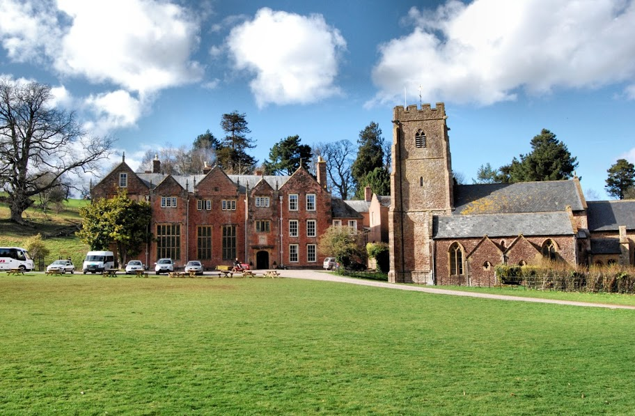
Nettlecombe Court (Image with kind permission of John Crocker)More detailed information about the IAYC in general, participants, the daily schedule and obsvering during the IAYC can be found in the About the IAYC section. We recommend all prospective participants read this section as well as the First Info carefully!
About the IAYC 2018
The IAYC 2018 will be taking place in the UK for the second time. It will be at Nettlecombe Court, a 16th century manor house located in the Exmoor National Park, Somerset. This area was also named the first International Dark Sky site in Europe! Somerset is located in the South of the country and the house is very close to the coast.
Nettlecombe Court serves as the Leonard Wills Field Centre, as a part of the Field Studies Council. There are 15 dormitory rooms and four well-equipped teaching rooms. In addition, there is a student common room which has a pool table, a piano,arcade games, and table football. There is also plenty of space outside for games and activities, an observation field, as well as a stream, woodlands, grasslands, and a river only a short walk away.
A virtual tour of the house is available here.

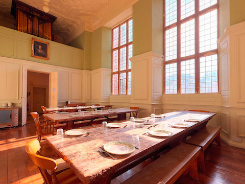
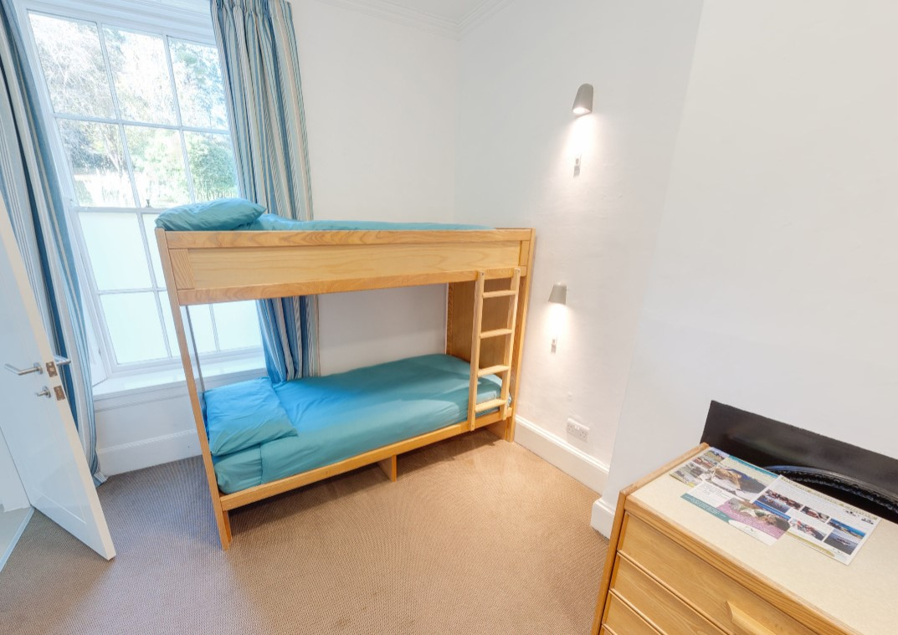
Nettlecombe Court is nestled in the beautiful rolling hills of Exmoor. (Image by Mark Robinson CC Licensed).
Address:
Nettlecombe Court,
Williton,
Taunton,
TA4 4HT
England
Coodinates:
- Latitude: 51° 7’ 51.6” N
- Longitude: 3° 21’ 0” W
Altitude:~ 100 m

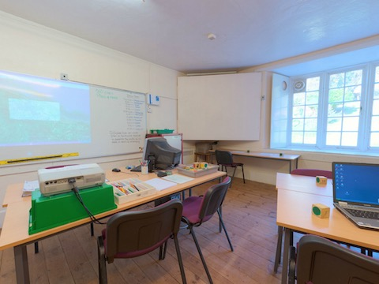
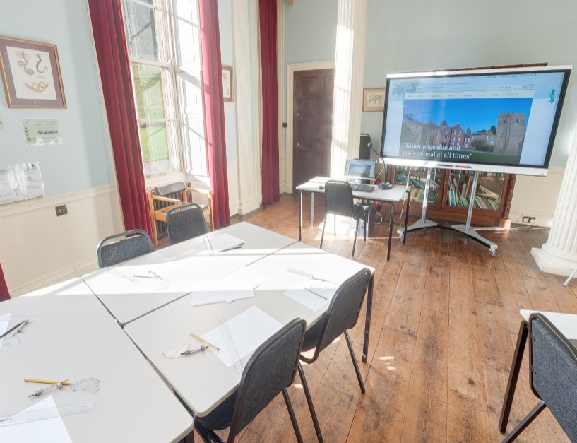
The nearest small town is Williton (3 miles/5 km) and the largest nearby town is Taunton (16 miles/26 km) where there is a train and a bus station. The nearest cities include Bristol (55 miles/90 km) and London (167 miles/270 km).
For more information, you can explore the map above or contact info@iayc.org.
A few facts about the United Kingdom
Area: 130 395 km²
Population: ~ 64 Million (2013)
Capital: London
Bigger cities: Birmingham, Leeds, Glasgow
Official Language: English
Currency: Pound (GBP) £
International Dialling Code: +44
Travelling in Europe in general (and in England in particular) is very safe. You should have no problem finding English speakers!
Observing
Nettlecombe Court is located in an area of very little light pollution. These conditions will be ideal for observing, which takes place during working group time as part of your project, or outside after midnight meal when the telescopes are available for everyone. Catch a glimpse of a celestial object through a telescope or lie down in your sleeping bag and enjoy the view.
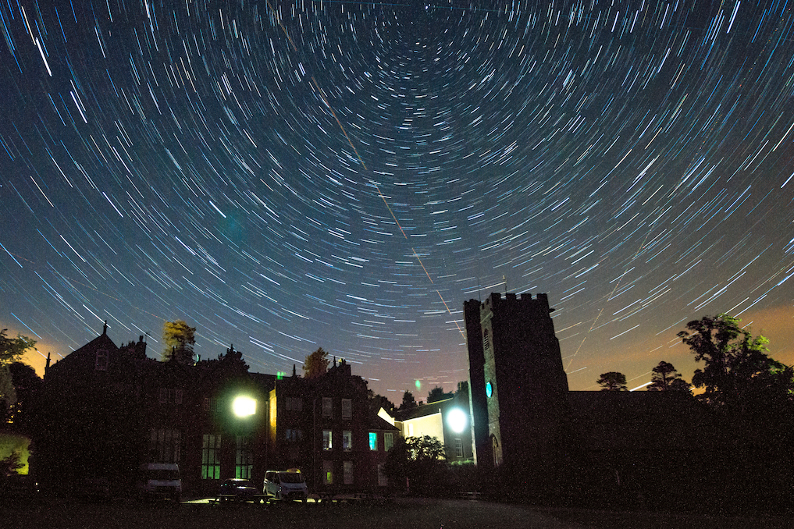
Startrails over Nettlecombe CourtIt’s not a problem if you don’t have any experience observing, the leaders and other participants are always happy to help. It doesn’t matter if it’s about constellations, how to use a telescope or how to take astro-pictures. At the beginning of the camp we will offer a telescope introduction to help you get a feel for the basics of how to use a telescope on your own.


Furthermore, there’ll be a photographic darkroom available. This means that you can take black and white (film) photos and develop them yourself. You are also welcome to bring your own telescope or binoculars. We will have available several telescopes and CCD cameras suitable for observing and the taking of astro-pictures.
For further information, contact daniel@iayc.org or alejandro@iayc.org. You can also check out the equipment page.
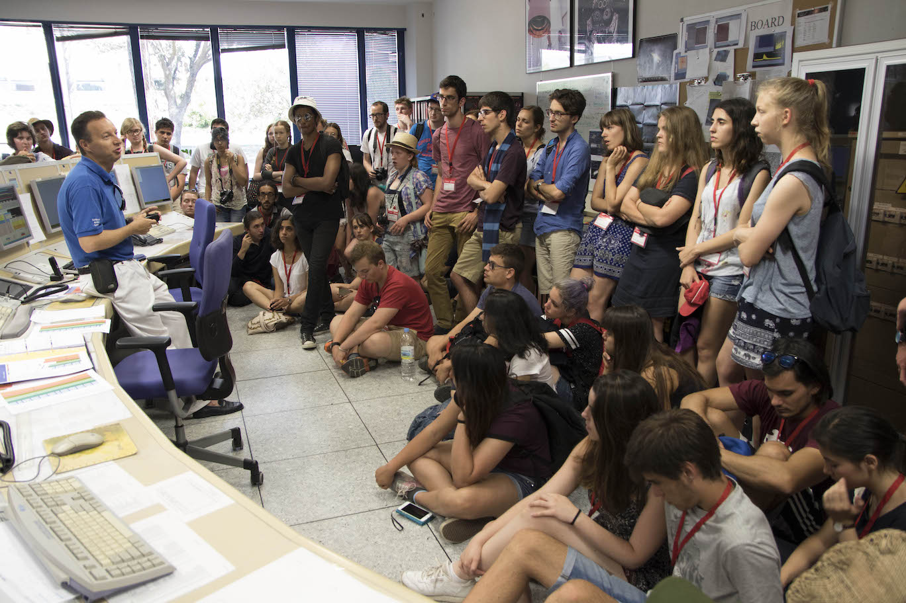
Participants visiting the European Space Astronomy Center in 2017 near Madrid, SpainParticipation
To participate in the IAYC you must be 16 to 24 years old (16 and 24 included). The participation fee for timely applications is 690 EUR. This applies to applications submitted before the 7th of April 2018. You will also require to sign a consent form and post it by regular mail before this date (the post stamp date counts!).
Later applications will be considered if places are still available, with an increased fee of 750 EUR. Timely applicants will be notified about the outcome of their application at the end of April. If accepted, you will need to transfer the applicable participation fee within 7 days of receiving the acceptance e-mail.
You can withdraw your application at any time before we receive the participation fee. If you want to drop out after that, and if we manage to fill up your place, we will refund you the full participation fee less an administration fee. This administration fee is 50 EUR if you drop out before the 19th of July and 100 EUR if you do it after (19th of July included). In the unlikely case we don’t manage to fill up your place the participation fee is non-refundable.
If financial reasons keep you from applying, then we encourage you to seek support from our limited grant programme. Contact info@iayc.org to obtain instructions about the grant application procedure. In order to apply for a grant, you need to fill in both the normal application and the grant application (grant applications will only be accepted together with the normal application, i.e. you cannot apply for a grant after you have already been accepted to attend the camp).
Applicants to the grant programme will be asked to prepare a short video (maximum of 5 minutes) answering a questionnaire which will be provided together with the grant application form. Grant applications need to be sent to info@iayc.org. The deadline for sending in a grant application is the 31st of March 2018.
Choosing your working group
In the following section you can find the abstracts of the 10 working groups offered at the IAYC 2018. On the application form you will need to indicate which working group you want to participate in. In addition to the working group overviews the Non-Astronomical Programme leader and the General Coordinator will also introduce themselves.
Remember that the projects offered in each working group are open to discussion. We also want to encourage you to ask for more information about them or even to propose related projects to the working group leader.
ACE - AstrophysiCs with intErferometers
Tags: Observational, Interferometry, Data, Resolution, Optics
Astronomers have always wanted bigger and bigger telescopes and as it turns out this isn’t just because of some superiority complex, there are two very good reasons why! The first is to be able to gather more light, allowing detections of fainter objects. In my opinion this for a long time has been the main drive in the demand for larger telescopes. This is only half the story however, a larger telescope also allows you to resolve smaller patches of sky, letting you see things that were too small to see before.
Long story short the maximum resolution of a telescope is inversely proportional to the mirror size. A mirror twice as big as another telescope can resolve things two times smaller on the sky. With that in mind, the Hubble space telescope has a mirror size of 2.4 meters, the largest existing optical telescopes are around 10 meters in diameter and the next generation will be a massive 39.3 meters but that won’t come online until 2024. What if I told you, however, that there are already telescopes operating today with the resolution of a 300 meter optical mirror? Welcome to the world of interferometry and this working group! Interferometry opens up entire new areas of research, from imaging the surface of other stars to observing gaps in circumstellar disks which are potentially due to forming planets
In ACE we will be exploring all things interferometry, potential projects include carrying out our own interferometric measurements at camp, analysing data from an interferometer such as the VLTI or even building our own table top LIGO (though I wouldn’t hold your breath for detecting gravitational waves!).
I hope we’ll have an ACE time, and if you have any questions or ideas for projects you’d be interested in please feel free to get in touch with me!
See you in (hopefully) sunny Nettlecombe!
Dan

This british fellow has been to the camp since 2012, joined the leader team in 2015, making the IAYC 2018 his 4th camp as a leader. If you haven’t talked with this young man yet, make sure you do during the next camp. Ask him about his cold days in Canada or about his new life as a PhD student in Cambridge working on interferometers. When he is not occupied with going to lectures held by famous people like Stephen Hawking or Ian McKellen, he is either running, watching TV series, listening to podcasts, going on photography trips or practising calligraphy. If that isn’t enough to talk about, you can also have a great talk about Star Wars or a discussion about his addiction to Austrian cuisine and Maki. If you are fortunate enough to be in his working group, you’ll be sure to have an amazing time!
ARTEMIS - AstRophysical ThEory and siMulatIonS
Tags: Data analysis, Programming, Theoretical, Simulations
“Astronomy compels the soul to look upwards and leads us from this world to another”, according to Plato. Astrophysics, on the other hand, compels us to use the laws of physics to explain what we see when we look upwards. It’s the discipline that underpins our modern understanding of the universe, helping us to describe anything from the motion of the smallest asteroids to the energetics of the brightest quasars.
Inspired by Artemis, the Greek goddess of the hunt, wilderness and the Moon, in this working group we will investigate some of the wildest and most extreme phenomena in the universe. During the camp, we’ll try to answer questions such as: Why do variable stars vary, and why do pulsars pulse? What makes a star go supernova? Can you calculate the distance to the Andromeda galaxy using a handful of images? How many black holes are there in the Milky Way, and how can we detect them? What connects the Earth’s aurorae, Saturn’s moon Pan and active galactic nuclei? We will use a combination of raw images and data from space telescopes, theoretical models, programs we’ll write during the camp and concepts from physics and astronomy to answer these questions.
If you’re completely new to physics and programming, or if you can solve the n-body problem in your sleep, I can guarantee you’ll find enjoyable and challenging projects in ARTEMIS. All you need to bring is your enthusiasm, and I’ll bring a plentiful supply of tea and biscuits.
See you at Nettlecombe!
Nikki

Nikki first appeared on IAYC’s scene in 2014 and she hasn’t missed a camp since. She will attend the IAYC 2018 for the first time as a leader, but don’t be fooled, she has a lot of experience! She is the creator and president of the Astronomy Society in the University of Warwick, where she’s working on her master about x-ray irradiation and evaporation of exoplanets. Doesn’t that sound cool enough? Wait to hear about her multiple hobbies! Apart from astrophysics she really enjoys music, Nikki plays the clarinet and the ukulele and she even composes her own music! Don’t miss the chance to sing along with her while looking for shooting stars in the observation field! Or to start a conversation about photography, sci-fi or her activism for the LGBT+ community. You’ll be lucky if you find yourself in ARTEMIS! Nikki will never gonna give you up, never gonna let you down, never gonna run around and desert you! (♪) plus, as any Brit worth their salt, she’ll always have plenty of tea for you ;)
DRAGON - DR2, Astrometry from Gaia and computatiON
Tags: Astrometry, Gaia, Programming, Simulations
If you are into the latest discoveries and investigations, you probably heard of Gaia before. It’s a spacecraft designed and launched by ESA that will provide us with the most precise astrometry from stars we have so far. This means that we will get more accurate positions and proper motions of over a billion stars! Pretty sweet, right? The upcoming Gaia second data release (Gaia DR2) will bring us new and exciting information about many of these stars, including photometric data, radial velocities and effective temperatures.
In DRAGON we will explore this catalogue and learn how to interpret the data to parameterise stars. We will use Topcat to understand and investigate each column and crossmatch Gaia DR2 with other useful catalogues. We will also use Python (a very useful programming language commonly used in astronomy) to analyse data and run some simulations. There are a wide variety of projects that can be done: from very basic understanding and playing around with different coordinate systems to calculating the PSF of a certain region, simulating the dynamics of nearby clusters, etc… But that will depend on the knowledge and interest of our DRAGONs and will be decided later. If you have any cool ideas for projects or have any questions do not hesitate to contact me, I won’t spit fire… In fact, I’ll be there for you anytime you need help and I will also make sure there are always enough cookies, crisps and obviously: tea!
See you in shiny England!
Irati

This Dino, sorry, epic dragon of the Basque Draconis kind was first observed 10 years ago in Germany. She hasn’t missed a camp since then and we had the honour of being under her rule last year. There are rumours that you can currently spot her somewhere in Vienna working hard on her PhD studies. The Basque Draconis are unique species, despite being shy at first contact with strangers, it’s a really sociable and kind creature. There are not records that these dragons spit fire but beware my friend, never make angry one them as their fury is famous all over the world. Instead, if the Basque Draconis is happy will embrace you with its wings and in some occasions will spit some “Muxus”. The Basque Draconis are also famous for their dancing and singing abilities (some people said that they can hypnotise with these skills). So don’t think it twice and surrender to the red Dragon!
FORCE - Foundations of ORbits and Celestial Equations
Tags: Celestial mechanics, Orbits, Theoretical, Computer simulations
“Ever since Plato, all of them: Aristarchus, Hipparchus, Ptolemy … they have all, all tried to reconcile their observations with circular orbits. But what if another shape is hiding in the heavens? - Another shape? There is no shape more pure than the circle. - I know, I know, but suppose, just suppose! The purity of the circle has blinded us from seeing anything beyond it! What if we dared to look at the world just as it is. Let us shed for a moment every preconceived idea. What shape would it show us?”
The Ptolemaic astronomy based on deferences and epicycles was the first attempt to solve the mistery of the apparent retrograde movement of the planets. As a first approximation it solved the problem, but as better observations were obtained the model was unable to fit them. A solution at the time was to introduce more epicycles, but how could one explain such a complex orbits? It took more than a millennium to discover the hidden shape. In 1609 when Johannes Kepler proposed the elliptical orbits (a circle with two centres) it meant a whole revolution in astronomy. For the first time the theory matched the observations, the laws that rule the motion of the planets were unraveled.
In this WG we will study the basics of classical celestial mechanics. We can start understanding Kepler’s laws of motion of planets. Too easy? What about pretending to be an ESA engineer a design a space mission to Mars or help sending a space probe to the outer space with the gravity assist of Jupiter? Do you prefer a project more ground to Earth, do you want to know more about tidal forces? or how to try to catch a satellite and resend it to the Earth? The list of possible projects is long, don’t hesitate to contact me if you have in mind a project you would like to develop in this WG
Are you ready to enter the dark side of the FORCE? If the answer is yes, be ready to three weeks of equations, ellipses and simulations. If after the camp you hate all the conic curves I will be more than satisfied ;) I cannot guarantee that the simulations will work, but I can guarantee a nice working atmosphere, with music and cookies. See you all in Nettlecombe!
May the FORCE be with you
Aitor

Zaunka, zaunka! What’s that noise? Oh! That’s the sound of Aitor barking in his native language! This 28 year old physicist from the cold far lands of Baskenland will never stop surprising you. Either he will show you the craziest memes or youtube videos, including the silliest songs and also the most melancholic ones; or he will jump around shouting “spaceship!” or “where is the poop?”, if you’re lucky enough not to be followed by him with a “shame bell” ;) Aitor’s first camp was back in 2008, and although he missed a couple of IAYCs since, this will be his 9th camp, 5th as a leader. He is currently doing his PhD in climate science in the also cold Stockholm (Sweden), so if you want to know anything about climate change, he’s your man! He definitely is one of the nicest people you’ll ever find at camp, he’s the most understanding and trustworthy person, and a really good friend, so be sure to be nice to him if you don’t want see his disapproving face and end up in his “Littlefinger blacklist”.
HOST - Hypothesizing Origin and Structure Together
Tags: Cosmology, Theoretical, Programming, Research, Galaxies
This year’s working group will focus on cosmology. Not to be mistaken as the study of beauty and makeup, we will be studying the origin and development of the universe, which is beautiful in a whole different way. Though there’s arguably no well-constrained subfield in astronomy, modern cosmology is constantly changing and growing to accommodate new research. Some discoveries confirm century old theories – such as gravitational waves confirming Einstein’s early 20th century equations – while others send us back to the drawing board time and again – such as the mystery of dark matter (is it a particle? A field? Black holes?). In HOST, you will be tasked with suggesting, confirming, and rejecting various hypotheses about the universe.
To do so, your tools will include Planck data of the cosmic microwave background, simulated data of dwarf galaxies and dark matter halos, LIGO data of gravitational waves, Python, and a whiteboard and pen. You will each learn valuable independent research skills by working with and analyzing real datasets. You will be able to answer questions such as, “how does this discovery fit into the larger framework of astronomy? What problems or questions are raised as a result of this discovery or theory? What conclusions can be drawn from these data?” By the end of three weeks, you may even be able to speak confidently about your topic or theory – though in cosmology, don’t be surprised if your findings quickly become outdated!
There is no prior cosmology knowledge or research experience required – only an interest in the topics presented here. Although basic programming skills will be helpful, they are not necessary. There will be plenty of resources to help you while you’re here, and it is my goal for all participants to gain not only knowledge but also transferrable skills in HOST. If you have a related idea you want to pursue, don’t hesitate to reach out to me at melanie@iayc.org even before applications are due. I’m happy to discuss them with you and tailor projects to individual interests!
See you in England!
Melanie

Welcome to the party because with Melanie around you can expect to see everyone smiling and having a good time. Mel brings a contagious enthusiasm and joy to everything she does and you only need to look at how far she travels to IAYC to see her dedication. Like all the leaders Mel is well versed in astronomy but you could try asking about her additional degree in German, even though she’ll probably deny that she can speak it. IAYC 2018 will be Mel’s 4th camp and her second as a leader. Quick to make her mark you’ll probably hear rumours and stories quite quickly about Mel’s talk, I won’t spoil what it’s about though. Don’t be shy about introducing yourself, Mel’s got a gem of advice about practically any subject you can imagine and she’s always happy to help educate people. Suffice to say that you’ll almost certainly count Mel as one of the unforgetable lifelong friends you will make at IAYC.
OH MY! - OH Marvellous relativitY!
Tags: Theoretical, Special Relativity, General Relativity, Particle Physics, Electrodynamics
Since Einstein published his theories of relativity in 1905 and 1915 many areas of physics have changed. From radioactive decay and particle accelerators to relativistic electrodynamics and gravitational lensing, many phenomena have been explained by it. The recent discovery of gravitational waves is a further victory for Einstein’s theories of relativity.
In OH MY! you will be spending a lot of time thinking about how relativity plays a part in many fields of physics. If you are interested in particle physics, you will learn about the large variety of different particles and accelerators, for example you will calculate decays and scattering processes. You will also learn more about different experiments and ways of detecting particles.
If you are more interested in the mathematics behind the theory of relativity, you will learn about lorentz and poincaré transformations, tensors, four vectors and potentially apply them to the maxwell equations to see how the electromagnetic field transforms when changing inertial systems. If you like a challenge, then a project in general relativity is the perfect fit for you.
Another kind of project could be the study of gravitational lensing, gravitational waves or about the theories of the expanding universe including dark matter and dark energy.
If you have any questions about the projects or if you have your own project ideas regarding relativity, don’t hesitate to contact me.
Are you excited for the camp now? I am for sure and I can’t wait to meet you all at Nettlecombe. I’ll make sure you’ll always have cookies and coffee, as well as tea (since we are in the UK there will be a lot).
Clear Skies!
Evi

Who is this young Austrian? This is Evi, Evi originally hails from the small region of Steyr-land (and no, it isn’t the name of a theme park sadly). Now living in Vienna and about to wrap up her bachelors of Physics in record time when not contemplating the fundamental building blocks of our universe you’ll find her solving jigsaw puzzles, running, or taking incredible photographs of everything from insects to far flung galaxies. Want to strike up a conversation with her? Try asking her about what it’s like to run birthday parties for kids at the planetarium, or how she won a bag of pasta for her beautiful photo of her home town at night. Having been around since 2014 you can rest assured that Evi knows her way around the IAYC and will do her upmost to make you feel welcome from day one.
RAIDERS - Rotations, Atmospheres, Interiors, and Destinies; Exoplanet ResearcherS!
Tags: Planets, Astrophysics, Geomorphology, Exobiology
Ever looked around yourself and wondered if this is all there is in the world? Have you considered what else is out there in the world just waiting for you to discover and all the experiences you can claim. For millenia now people have been exploring and uncovering the secrets of the Earth, but a brave few have looked beyond these confines to distant shores. Astronomers and planetary scientists have studied the alien worlds that lie beyond what we know, from humble asteroids to ice moons and misterious exo-planets.
If you have the spirit of an adveturing explorer of old then join RAIDERS as we embark on our voyage of discovery and write a new saga. Together we will face the unknown, we will learn what makes planets tick, and what it takes for life to survive in space. We may find ourselves face to face with strange creatures unlike what we know on Earth, learning about how life can work out there. We might keep our distance and gather information about these far off lands to learn what we can before we send our explorers to investigate. Perhaps we will discover how so many worlds come to be and what decides their natures. Some of us will search for new worlds to study and explore while others think of new ways to find and understand them.
One thing is for certain we will never be bored or wanting for things to do as we forge iron bonds of friendship and feast heartily together. Fear not if you are inexperienced in adventuring and exploration as your companions will always be ready to come to your rescue and offer support. As the captain of our voyage I’ll always be available when you need me.
So if you’re ready to set sail, join RAIDERS!
See you at the Court of Nettlecombe!
Cillian

Have you ever met an Irishman with a Viking beard who speaks fluent Spanish with a Mexican accent? Dear reader, meet Cillian. This charming man of many talents joined IAYC for the first and second times in 2015 and 2017, where he fell in love with all that IAYC has to offer. As one of the sweetest guys you’ll ever meet, you can count on Cillian for anything, be it a helping hand while cleaning the NAP hall to a cheerful attitude and a hug if you’re having an off day. Even though he’ll have his blackbelt in ninjutsu by IAYC 2018, he wouldn’t hurt a fly – but he’s happy to teach you a thing or two if you ask. You’ll love his contagious energy and enthusiasm, and he’s excited to meet you too!
SAPPHO - SpAce through PhotograPHy and Observations
Tags: Astrophotography, Observational astronomy, Practical astronomy, Art
The hypnotic and overwhelming beuty of the night sky sets us in the limits of science and art. In SAPPHO we’re going to focus on those limits, and we are going to do it through practical astronomy and images.
Armed with telescopes, cameras and even paper and pencils we will capture photons that have been travelling, in some cases, for millions of years:
We will work on astrophotography: Either if you’re interested into deep-sky imaging, timelapses, panoramas, planetary photography, or even film photography, then SAPPHO is your working group! Astrophotography will help us detect details in different regions of the night-sky that cannot be seen with our eyes, revealing aswell the color-palette of the universe. We will also play with the results of your pictures, processing them with different softwares.
If you are more classic, you can work on a more traditional part of practical astronomy too, such as astro-sketching. Even though our eyes are not the most powerful or trustful tools, they allow us to understand astronomical objects our own way, as we see them through the eyepiece. Astronomical drawings are unique memories of our observations, if you don’t trust me, just check out these blogs: https://vangestel.de/astro/en/sketch-galleries, https://www.deepskywatch.com/astronomy-sketches.html, …
But our journey won’t finish here: Space telescopes and probes like HST or Juno have sharpened our view of the universe and other worlds. They were mainly thought for investigating, but their legacy will go way further, these probes are revealing us textures, geometries and compositions that we would have never thought of. Most of the material is not as visually attractive as it could be, and we’re going to exploit its full potential processing it, interpreting their data our own way.
These are just some of the ideas, which are, of course, open to discussion. If you have any other similar projects in mind, they will be very very welcome as well! :) Don’t hesitate to contact me (mara@iayc.org) if you have any doubts or suggestions!
In any case, if you’re one of those people who think “an image is worth a million words” and either you like playing around with telescopes, photography, sketching or you’re simply looking for the beauty of our universe, then SAPPHO is your working group! :)
Mara

If you’ve not yet had the pleasure of meeting Mara, you’re in luck! This lovely Spaniard is back for her 2nd camp as leader, having never missed a camp since 2015. When she’s not studying physics at the Complutense University of Madrid, you’ll find Mara making beautiful astrophotos and astro-sketches, dancing the Lindy Hop, or writing about science and art on her blog. Don’t hesitate to talk to her if you want to learn about astrophotography, historical women of astronomy, or if you want to gain an amazing new friend! She’s never short of energy, enthusiasm or kindness, so if you are fortunate enough to be in her group, you’re going to have an incredible three weeks!
T-REX - Training Robots to EXplore
Tags: Programming, Robotics, Computer vision, Rovers
Does space fill you with Curiosity? Are you interested in the Spirit of space exploration, and the Opportunity that it brings? Unfortunately the puns stop there because NASA didn’t care to give the rest of their space probes more convenient names.
In T-REX we will learn all about robotic space exploration using planetary rovers. Rovers are awesome. Using them we’re able to analyse the soil on Mars, sniff the toxic atmosphere of Venus and even take photos from the surface of comets (yes, I know Philae was a lander). Although rovers often carry different payloads depending on the mission (spectrometers, lasers, drills, etc), virtually every system has a bunch of cameras to give us eyes on an alien world. We can use images to navigate, reconstruct 3D models of terrain, identify interesting geology and help the rover avoid obstacles. Plus, of course, we can take pretty panoramas.
Let’s build one and explore Nettlecombe! But what will we actually do, I hear you ask? How about:
- Planning and carrying out a robotic mission, deciding how to achieve a science goal when time and power are against you
- Mapping an environment in 3D, localising the rover in the environment and overlaying sensor data
- Using computer vision/machine learning to locate, classify and analyse objects in images
- Understanding how we control systems that are very far from Earth
This is a great opportunity to get involved with hardware hacking, computer vision and machine learning. We will be using Python for pretty much everything. Don’t be afraid if you know nothing (Jon Snow), you will learn!
#!/usr/bin/env python
import random
benefits = ['caffeine', 'food', 'good music', 'Josh', 'memes']
print("Don't worry, there will be {} to keep you going!")
.format(random.choice(benefits))
Josh

Josh, Joshito or currently Dr. Josh is one of camp’s favorite dinosaurs leaders. He’s been around for 9 years already! His first appearance was in 2009, and ever since he’s been an indispensable piece in the IAYC-puzzle. He fulfills every room with his ecliptic personality, though shy at start, very funny when you get to know him. He has a very spicy sense of humor and interesting remarks on almost anything you can think of. He loves riddles and he is passionate about photography (ask him to show you some of his astro-pics for instance!). He did his PhD studies at the UCL Mullard Space Lab, where he worked on 3D imaging and rovers. So you guessed rightly he is the perfect guy to rock the T-Rex group. And despite of his “T-Rex” condition, he holds the title of being the king of massages! If you get into his WG, you should not miss the opportunity to get on of those, it will certainly make you roar!
YETI - astrophYsics Experiments wiTh partIcles
Tags: Astroparticles, Physics, Experiments, Detectors
As mysterious and hidden as this legendary being from the mountains – the YETI – are dark matter, majorana neutrinos and some other astroparticles. YET theorIsed, they have never been detected. The nature of dark matter, for example, remains a mystery. Therefore, its detection is crucial to unravel its nature and with it, being able to understand much more about our Universe. This triggered the existence of Astroparticle Physics to study and detect the elementary particles coming from astronomical origin.
Also consider this: the largest part of the Universe does NOT emit light! Consequently, a branch of astronomy is required to study what happens with this 96% of energy in our universe that is unseen. At this point, technology plays an important role in the development of different and ingenious detectors and telescopes. Such as the amazing IceCube telescope at the South Pole! This telescope searches for neutrinos from the most violent astrophysical sources: events like exploding stars, gamma-ray bursts, and cataclysmic phenomena involving black holes and neutron stars. Or the CRESST experiment, in which I am involved, that aims the detection of dark matter from its elastic scattering off nuclei. And all of this at temperatures as low as 20 mK!!!
If you would like to learn more about this field, this is definitely your group. I have prepared for you some projects where you’ll be able to approach this field through really cool experiments. We are not only going to build a cloud chamber, but also we are going to work with it to grasp all the possible information about the behaviour of the detected particles. You will also have the possibility to get involved in a real astroparticle experiment by doing data analysis, for instance. Another crazy experiment I have in mind for those of you who love working on a good challenge is to build your own supernova just with water and few more things.
Are you ready to roll up your sleeves and get into matter? Yes? then you are very welcome here!!! From my side, I promise you an amazing atmosphere and, of course, some tea to carry out all these projects in the lovely England! So, my dear YETI, it’s time for you to shave all that fur and get ready for the greatest summer ever imagined, I am so looking forward to meet you at the IAYC2018!
Eli

If looking at things you can’t see is what you’re interested in, then Eli is who to find. She’s studying at the Technical University in Munich, researching detector development for neutrinos and dark matter using the CRESST experiment. Eli is easy to spot: she’s perpetually smiling and is always eager to talk to you about interesting things like how to figure out if a pill contains poison, or the best way to get three people across a bridge in the dark. Whether it’s astroparticle physics, logic puzzles, or debating the best recording of Beethoven’s Symphonies, get Eli talking and you’ll be glad you did!
NAP - Non-Astronomical Program
So you are after an night full of observing, right until the Venus rises. What is the first thing that you need after dinner? That’s right, a NAP.
So grab a blanket and get ready to sleep, right? Haha, not so fast. Grab a blindfolding device, an isomat and get ready to have great fun! That’s right NAP is going to be all but sleeping. The Non-Astronomical Programme will cater for your non-academic needs. We shall get to know each other, play silly and slightly-more-serious games, laugh, run, cooperate and compete!
But wait, there’s more! In the NAP you will also have a chance to get to know other cultures and represent your own country through the world-famous national evening! Is that all? No, the fun never stops! Can you dance, sing, do magic tricks or tame wild animals? NAP has you covered with the performance evening where you can show your skills and watch other people do amazing stuff. On top of that we shall also have a poetry evening and a singing evening, as not everything can be expressed with a mathematical formula.
So, do I have you on board? Great! Remember to pack these essentials so that you don’t miss out: a blindfolding device, i.e. something to cover your eyes (e.g. a scarf, but do get creative). Shoes and clothes that you will be comfortable running in. Any instruments or equipment that you need to perform. Your favourite poem. Anything you think could help people know your country/culture better. And most importantly - good sense of humour and openness to others. Don’t worry about bringing a smile, we will make sure you get a huge one.
Don’t hesitate to drop me an email if you have any questions and concerns regarding probably the best part of your day (other leaders might disagree slightly).
See you all in Nettlecombe!
Mike

This is Mike and as you can see, he loves to be handosme in photos. Coming from Poland and currently studying Electronic and Computer Science at the University of Edinburgh; he is full of surprises and really enjoys electronic gadgedts and programming. Maybe in the future he might conquer the world with little arduino robots. You will also find in Mike a person to talk about anything for hours, try it, he is a good listener and one of the best people I’ve ever known. This will be his fifth camp and second as a leader, so he is quite a experienced member of the IAYC and as the next NAP leader I can guarantee you that fun will be constant during the entire camp. Brace yourselves, NAP is coming!
GEN - General Coordinator
“O General my General! What’s your duty, my General?”
Good question, fellow iaycer, as the General Coordinator my duty is keeping the camp running smoothly making these three weeks to experience that you’ll never forget.
Do you want more details? During the camp I’ll be the one talking with the house staff, making sure, among other things, that you have enough breakfast and coffee (or tea) to begin the day with. I’ll make tons of announcements about the daily schedule, pay attention if you want to know when you can wash your clothes or what were the last adventures of Tim, the house ghost. Before that I’ll arrange the transport so you can arrive safely to the camp and then I’ll make sure nothing bad happens during these weeks, and in the case that something happens, I’ll take care of it. Other daily duties will be buying snacks for your working group sessions, making sure your rooms are clean or collecting money from you merchanising shopping.
Remember that I’m here for you. Do not hesitate about coming to me if you need something or just want to talk about life, the universe and everything else. Everything I’ll ask for is common sense! But first of all, you’ve got a friend in me. We will spend three weeks together in an incredible atmoshpere of science and cultural exchange where, most probably, your opinion about the world that surround us, will change.
See you at the green fields of Nettlecombe Court!
Alex

All hail the GEN! With Alex at the helm, you have no need to worry! With 4 camps under his belt and the experience running an astronomy club at the Complutense University of Madrid he knows what is what and how to get things done. And the mixture of Spanish and Colombian blood makes a really strong character to back it up! And as you will see for yourself, Alex is just an awesome guy overall. He is super-friendly and you can strike up a conversation with him any time! Studying astrophysics, he is very passionate about the space, space travel, rockets, DIY, 3D printers and 3D-printed spacecraft, you name it. If you can’t find him, he will probably be out on the observation field, taking some of his truly amazing astro-pictures. Seriously, you need to see them. Aspiring to be the next IAYC dinosaur, Alex has all you need to make your summer even better!
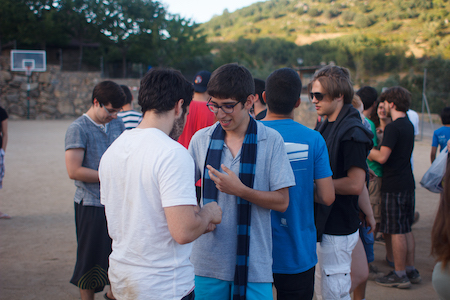
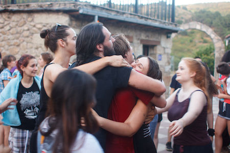
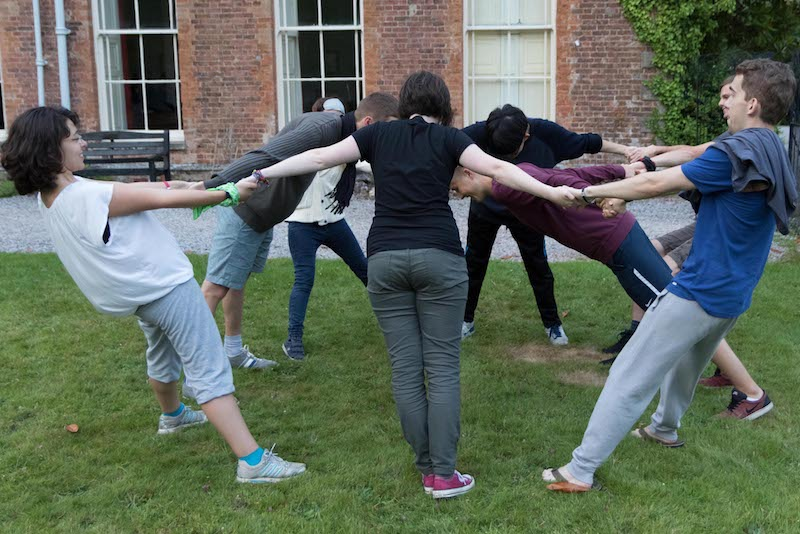
Your application for the IAYC 2018
If you want to participate in the IAYC 2018, fill in the online application (open soon), print the consent form, sign it and send it to us as soon as possible by regular post. If you are not yet 18 (21 in some countries) your legal guardian (usually a parent) has to sign the form as well. Please do not forget to attach a recent picture to your profile.
Make sure you have read the terms and conditions on the consent form carefully. Please note that you are obliged to have health insurance, which is valid in England, for the duration of the camp. If we decide to accept your application you will need to send a copy of your insurance certificate to us (e.g. travel insurance certificate, European Health Insurance Card, etc.).
You must be able to attend the entire camp, from the first Sunday evening to the last Saturday morning. We do not make exceptions to this rule. The IAYC experience is not like a summer school or conference with ‘optional’ sessions. The beginning and end of the camp are amongst the most important both for project work/report writing and for bonding with your fellow participants. We want all our participants to enjoy the full camp experience!
Applying
To complete your application procedure, please send the consent form generated by the online application by regular post to:
IAYC 2018
c/o Irati Larreina
Elterleinplatz 1/9a
1170 Wien
AUSTRIA
Please note that we will only consider applications if we have received the signed consent form via regular post.
If you apply before the 7th of April 2018 (post stamp date counts), you will be informed about your acceptance by the end of April. Later applications will be considered if places are still available.
If accepted, you will need to transfer the applicable participation fee within 7 days of receiving the acceptance email.
If you need to apply for a VISA to enter England please contact the British embassy or foreign office in your country as soon as possible to find out what documents you will need.
Please make an appointment for your visa application for the end of April, even if your application has not yet been accepted. Organise this ASAP!
Once you have been accepted to the IAYC we will provide a letter of invitation if necessary – please find out what details this letter should contain and contact us at least 2 weeks before your appointment at the embassy! Apart from the letter of invitation, obtaining a visa is your responsibility.
Travel to the IAYC
Please note that we cannot make travel arrangements for individual participants. Travel to and from the camp is the sole responsibility of the participant. You will however upon acceptance receive a link to the Second Info brochure. It will contain more detailed information on how to travel to the camp. Additionally, you will receive a list with the contact details of all the other participants attending the IAYC 2018. This will enable you to contact other participants and arrange travel to the camp together. We will be arranging for coaches to take participants from London to the camp house on the arrival day. This also applies for departure. More details will be available after acceptance.
Any questions?
If you have any questions that are not answered by this page, then we have an information service, info@iayc.org, that you can email. This is the same address that you should send your scans to. We will try to answer you within a couple of days - usually it’s sooner!
Before emailing info, please make sure you have read the First Info thoroughly. Please also read the FAQ which answers some of the more common questions that you might have.
Clear skies from all of us!
Aitor, Alex, Cillian, Dan, Eli, Evi, Irati, Josh, Mara, Mike, Mel and Nikki.
–
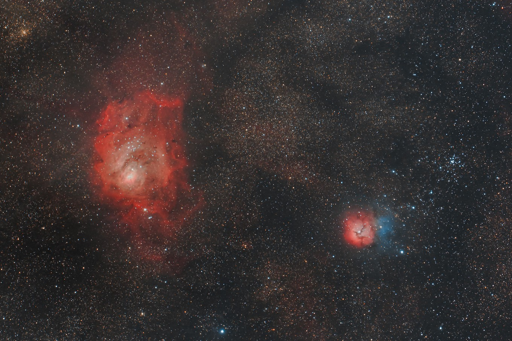
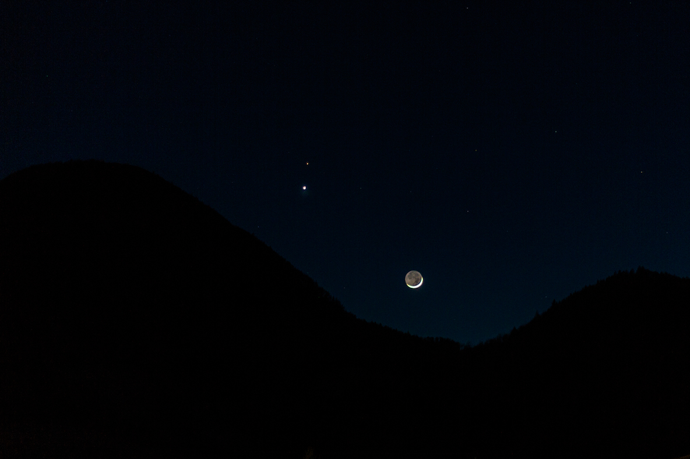
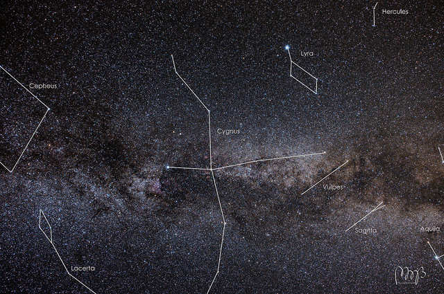